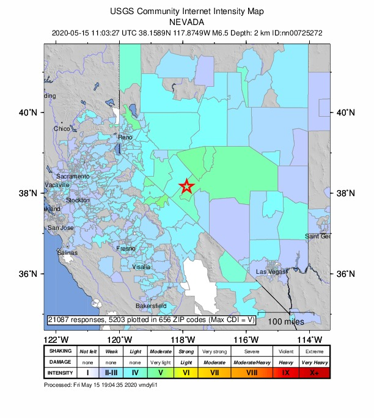
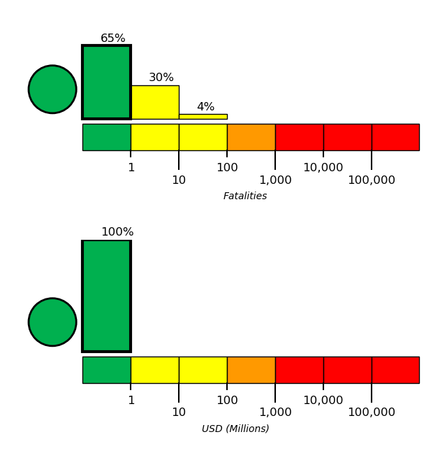
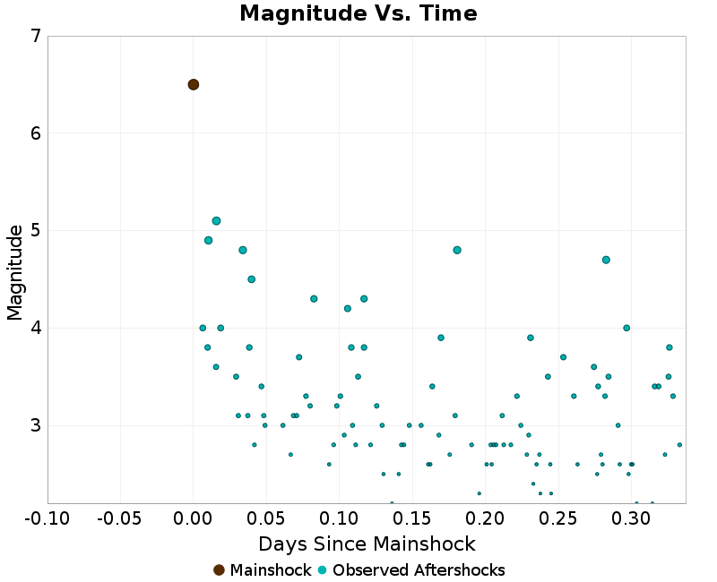
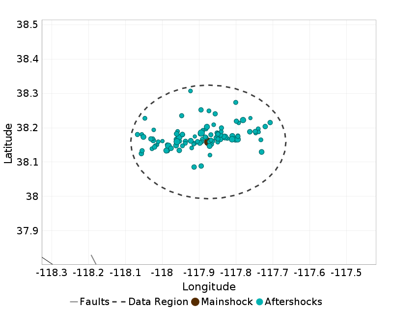
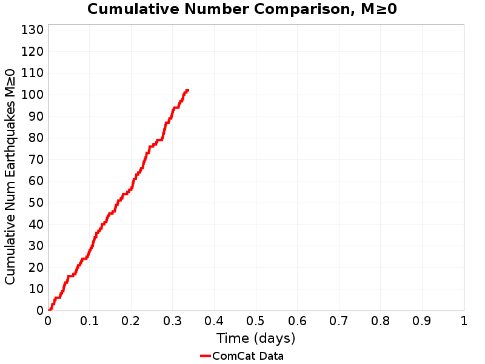
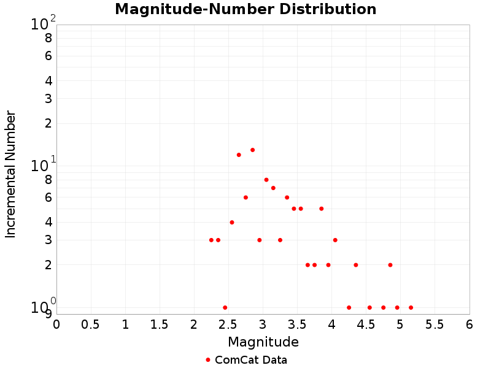

6.5, 56km W of Tonopah, Nevada
Table Of Contents
Mainshock Details
Information and plots in the section are taken from the USGS event page, accessed through ComCat.
| Field | Value |
|---|---|
| Magnitude | 6.5 (ml) |
| Time (UTC) | Fri, 15 May 2020 11:03:27 UTC |
| Time (PDT) | Fri, 15 May 2020 04:03:27 PDT |
| Location | 38.1589, -117.8749 |
| Depth | 2.8 km |
| Status | reviewed |
USGS Products
 |  |  |
Nearby Faults
No UCERF3 fault sections are within 10km of this event's hypocenter.
Sequence Details
These plots show the aftershock sequence, using data sourced from ComCat. They were last updated at 2020/05/15 19:08:36 UTC, 8.09 hours after the mainshock.
102 M≥0 earthquakes within 18.41 km of the mainshock's epicenter.
| First Hour | To Date | |
|---|---|---|
| M 0 | 12 | 102 |
| M 1 | 12 | 102 |
| M 2 | 12 | 102 |
| M 3 | 12 | 57 |
| M 4 | 6 | 12 |
| M 5 | 1 | 1 |
Magnitude Vs. Time Plot
This plot shows the magnitude vs. time evolution of the sequence. The mainshock is ploted as a brown circle, and aftershocks are plotted as cyan circles.

Aftershock Locations
Map view of the aftershock sequence, plotted as cyan circles. The mainshock is plotted below as a brown circle, but may be obscured by aftershocks. Nearby UCERF3 fault traces are plotted in gray lines, and the region used to fetch aftershock data in a dashed dark gray line.

Cumulative Number Plot
This plot shows the cumulative number of M≥0 aftershocks as a function of time since the mainshock.

Magnitude-Number Distributions (MNDs)
These plot shows the magnitude-number distribution of the aftershock sequence thus far. The left plot gives an incremental distribution (the count in each magnitude bin), and the right plot a cumulative distribution (the count in or above each magnitude bin).
| Incremental MND | Cumulative MND |
|---|---|
|  |  |